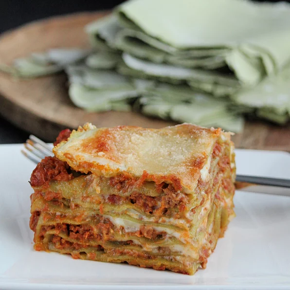

Lasagne
Description

This is an adaptation of the official lasagne from the
Bolognese Chamber of Commerce. I've made a couple of changes
suggested to me by people from the area, such as which
meat and wine to use or if there should be milk added or not.
One thing never in question, though, is the green lasagne sheets.
These are a must. The ragu is an authentic sauce, simple without
garlic or herbs and spices. Using fresh pasta keeps you from having to pre-boil it.
Ingredients
Ragu
- 1 package pancetta, minced
- 1/2 cup diced carrot
- 1/2 cup diced celery
- 1/2 cup diced yellow onion
- 1 tablespoon olive oil
- 7 ounces ground beef
- 6 ounces ground pork
- 1/2 cup dry red wine
- 1 1/2 cups plain tomato sauce
- 2 cups vegetable broth, or more as needed
Pasta
- 1/4 cup water
- 1 pinch salt
- 1/2 package frozen spinach
- 1/2 package gluten-free al-purpose baking flour
- 2 medium eggs, at room temperature
- salt to taste
- 1/2 cup whole milk
Bechamel Sauce
- 1/3 cup unsalted butter
- 1/3 cup gluten-free all-purpose baking flour
- 2 cups whole milk
- 1/4 teaspoon ground nutmeg
- 1/8 teaspoon salt
- 1cup finely grated Parmigiano-Reggiano cheese
Steps
- Step 1: Saute pancetta in a large stockpot over medium-high heat until fat has rendered,
1 to 2 minutes. Add carrot, celery, onion, and oil. Cook and stir until vegetables have
softened and onion is translucent, about 5 minutes. Add beef and pork. Cook, stirring
and mashing meat into small crumbles, until browned, 5 to 7 minutes more.
- Step 2: Stir wine into the stockpot and bring to a boil. Add tomato sauce and stir;
pour in 1 cup broth. Reduce heat to low and partially cover the pot to allow steam to escape.
Simmer sauce for 1 hour, stirring occasionally.
- Step 3: Pour 1 more cup of broth into the sauce. Continue simmering until thick, 1 to 1 1/2 hours.
Add more broth only if absolutely necessary; ragu should drop, not run, off a spoon.
- Step 4:Start preparing pasta after sauce has been cooking for 1 1/2 hours.
Bring water and salt to a boil in a small saucepan. Add spinach and cover until it returns to a boil.
Stir gently and cook until spinach is heated through. Remove from heat, leave covered, and let cool.
- Step 5: Drain spinach in a mesh strainer set over a bowl, pressing it down with a fork
to squeeze out as much water and possible; reserve the liquid. Puree spinach in a blender until smooth.
- Step 6: Sift flour into a bowl. Make a well in the center; add eggs, spinach,
and about 1 tablespoon of the reserved liquid. Mix together by hand or using the dough hook of a stand mixer,
adding more liquid if needed. Knead until dough becomes a smooth ball. Cover with plastic wrap and let sit at
room temperature for 30 minutes.
- Step 7: Taste the ragu and adjust salt. Remove from heat and add milk; stir well and set aside to cool.
- Step 8: Divide pasta dough into 4 equal sections. Use a pasta machine, or rolling pin,
dusted with flour, to roll pasta into 1/16-inch thick sheets.
Lay sheets on clean dish towels to help them dry. Let rest for 20 minutes.
- Step 9: Meanwhile, melt butter in a saucepan over medium heat. Do not allow it to brown or burn.
Add flour and whisk constantly until golden. Add 1/2 cup milk, whisking constantly. Repeat with remaining milk.
Simmer until bechamel is thickened, about 10 minutes. Season with nutmeg and salt.
- Step 10: Preheat the oven to 350 degrees F (175 degrees C).
- Step 11: Spread a bit of the ragu sauce over the base of a 9x13-inch baking dish.
Add a layer of pasta. Top with a spoonful of sauce and bechamel. Add a spoonful of grated Parmigiano-Reggiano.
Top with another layer of pasta. Add more sauce, bechamel, and cheese. Repeat layers until you reach the top;
finish with a layer of pasta, bechamel, and cheese.
- Step 12: Bake in the preheated oven until the sauce is bubbling and the cheese on top has browned,
25 to 30 minutes. Let lasagne rest for 10 or 15 minutes at room temperature before slicing.